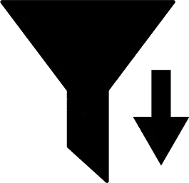

<div class="sidebar-content">
  <div class="main-sections">
    <div *ngFor="let section of sections" 
         class="sidebar-item" 
         [class.active]="activeSection === section.id"
         (click)="navigate(section.id)">
      <i class="material-icons">{{ section.icon }}</i>
      <span class="section-name">{{ section.name }}</span>
    </div>
  </div>
  
  <div class="collections-section">
    <div class="collections-header">
      <h3 class="section-title">Colecciones</h3>
      <!-- BOTÓN DE FILTRO -->
<button class="sort-button" (click)="toggleAlbumSort()" [title]="getSortTooltip()">
  <ng-container *ngIf="!isAscendingSort">
    
    
  </ng-container>
  <ng-container *ngIf="isAscendingSort">
    
    
  </ng-container>
</button>
    </div>
    
    <div class="album-list">
      <!-- Lista dinámica de álbumes ordenados -->
      <div *ngFor="let album of sortedAlbums" 
           class="sidebar-item small" 
           [class.active]="activeSection === 'albumes' && album.id === selectedAlbumId"
           (click)="selectAlbum(album.id)">
        <span>{{ album.name }}</span>
        <span class="year-tag">{{ album.year }}</span>
      </div>
    </div>
  </div>
</div>
